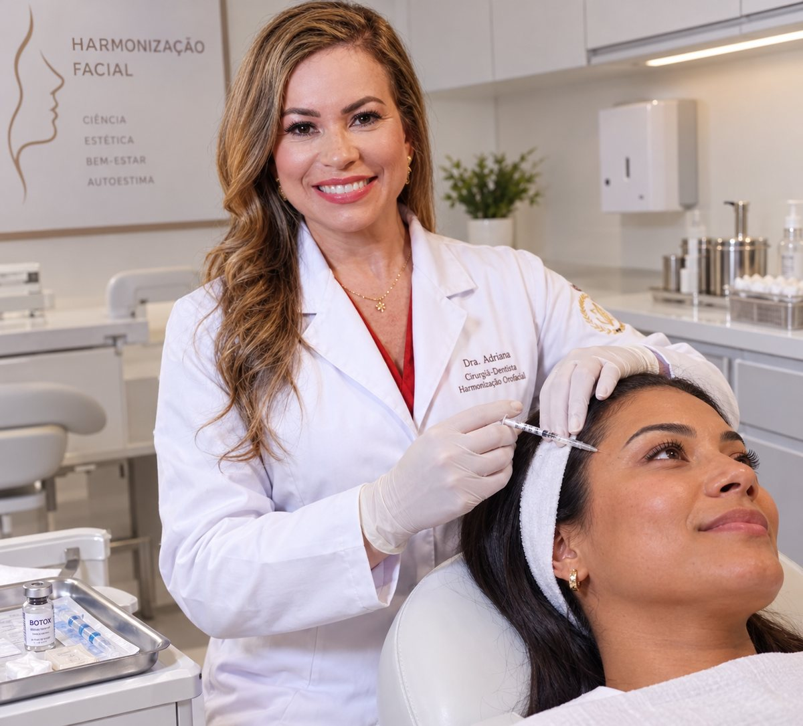
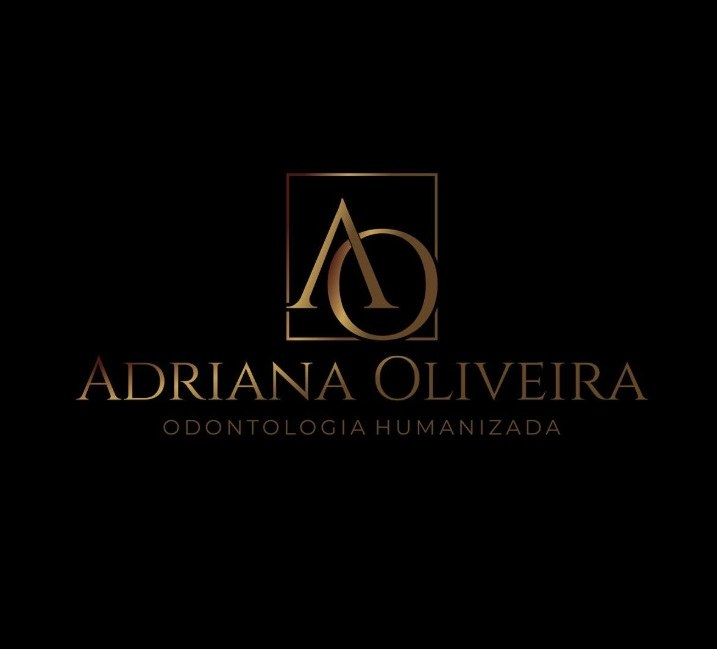

01
Escuta sem julgamentos
Um espaço para falar sobre o que deseja melhorar e tirar suas dúvidas com tranquilidade.
Cuidado estético com olhar individualizado, escuta atenta e respeito à sua naturalidade. Vamos conversar sobre o que faz sentido para você?

Mais do que escolher um procedimento, o primeiro passo é entender suas expectativas e avaliar suas necessidades com responsabilidade.
Um espaço para falar sobre o que deseja melhorar e tirar suas dúvidas com tranquilidade.
As possibilidades são discutidas a partir da avaliação clínica, das suas características e dos seus objetivos.
A proposta é buscar equilíbrio e harmonia, sem promessas irreais ou soluções iguais para todos.
Cada procedimento exige avaliação, indicação adequada e conversa clara sobre benefícios, limites e possíveis riscos.
Para linhas de expressão e, quando indicado, sorriso gengival, bruxismo ou sintomas associados à DTM.
Conversar sobre o tratamento ↗Ácido hialurônico para avaliar volume, contorno, queixo, sulcos e definição dos lábios.
Conversar sobre o tratamento ↗Opções para estimular colágeno e auxiliar na firmeza da pele, conforme avaliação.
Conversar sobre o tratamento ↗Procedimento cirúrgico que pode modificar o volume das bochechas em casos selecionados.
Conversar sobre o tratamento ↗Avaliação das opções para a região submentoniana, de acordo com a causa e a indicação.
Conversar sobre o tratamento ↗Alternativas para casos selecionados de flacidez, sempre após avaliação individual.
Conversar sobre o tratamento ↗Procedimentos periodontais para avaliar a proporção gengival e a harmonia do sorriso.
Conversar sobre o tratamento ↗Facetas, lentes e clareamento podem ser avaliados para cor, forma e composição do sorriso.
Conversar sobre o tratamento ↗A indicação depende de avaliação clínica e da habilitação profissional aplicável. Nem todo procedimento é adequado para todas as pessoas; resultados variam e não podem ser garantidos.

Meu compromisso é oferecer um atendimento próximo e cuidadoso, em que você tenha espaço para explicar seus desejos, compreender as possibilidades e decidir com segurança.
Na odontologia humanizada, cada pessoa é única. Por isso, a avaliação e o planejamento vêm antes de qualquer decisão sobre procedimentos.
Veja também conteúdos e atualizações no Instagram da Dra. Adriana.
Agende uma avaliação e esclareça suas dúvidas com calma.
Algumas respostas para você chegar à avaliação com mais tranquilidade.
A indicação só pode ser feita após avaliação individual, considerando sua saúde, anatomia, expectativas, contraindicações e alternativas disponíveis.
O planejamento busca respeitar suas características, mas resultados variam conforme o procedimento e cada pessoa. Na avaliação, converse sobre o resultado possível e suas limitações.
Sim. Todo procedimento pode envolver riscos, efeitos adversos ou contraindicações. Antes de decidir, você deve receber informações claras sobre riscos, cuidados e acompanhamento.
Toque em qualquer botão de agendamento para iniciar uma conversa pelo WhatsApp. A equipe poderá orientar sobre horários e informações para a consulta.
A clínica está localizada no Torres Center, com acesso pela região do Imbuí / Boca do Rio.
Envie uma mensagem para consultar horários e saber mais sobre o atendimento.
Iniciar conversa no WhatsApp ↗